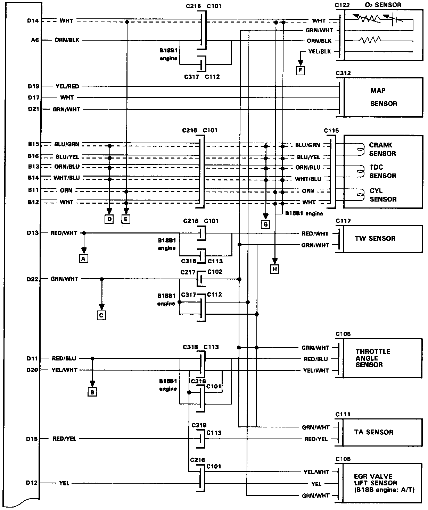
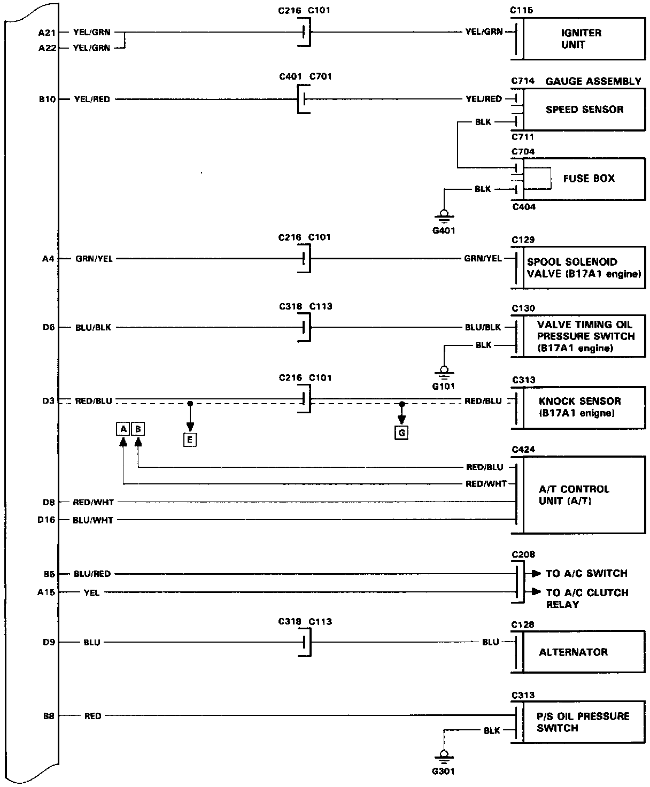
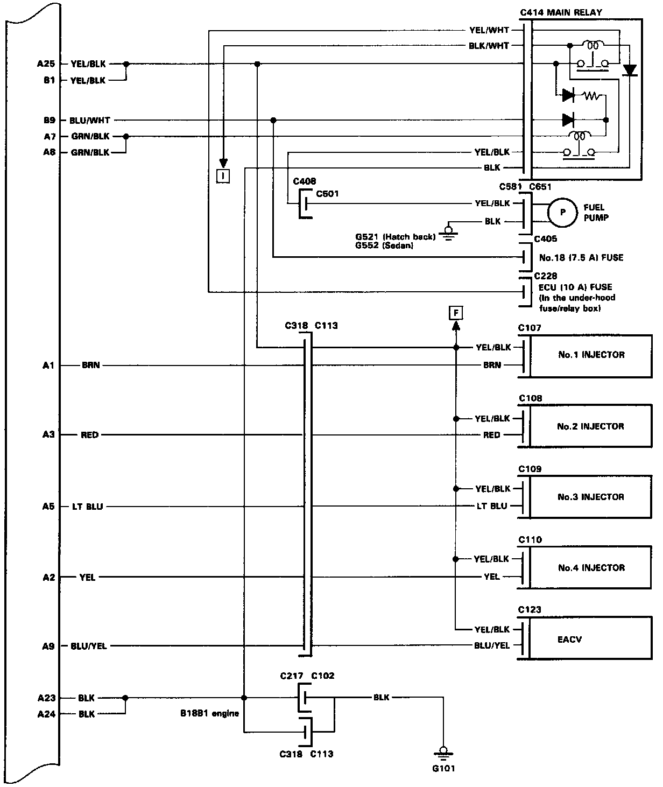
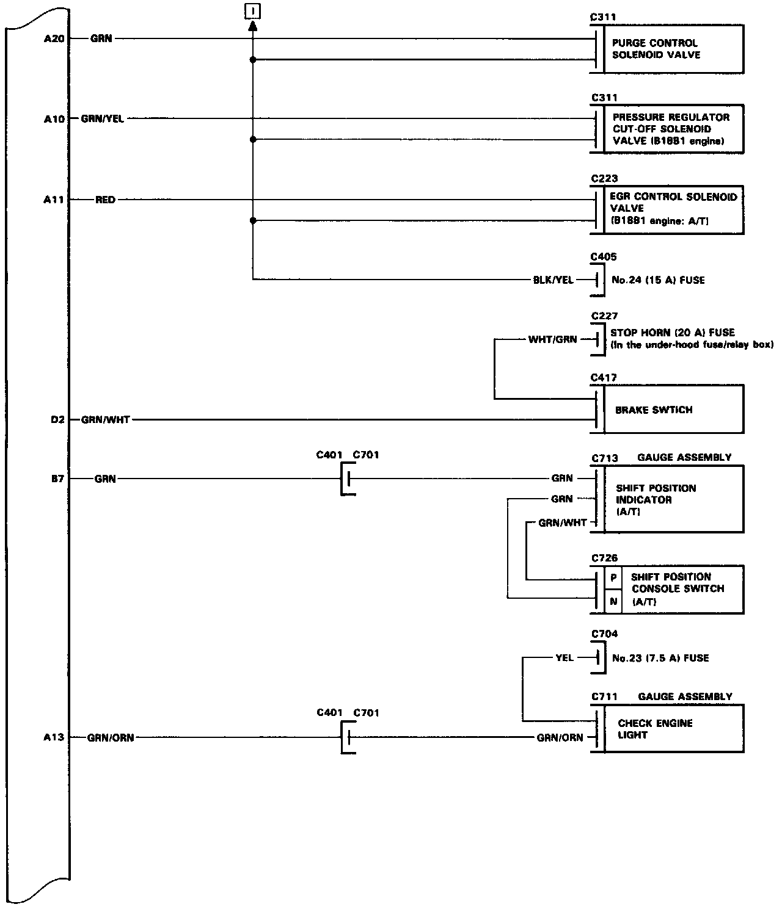
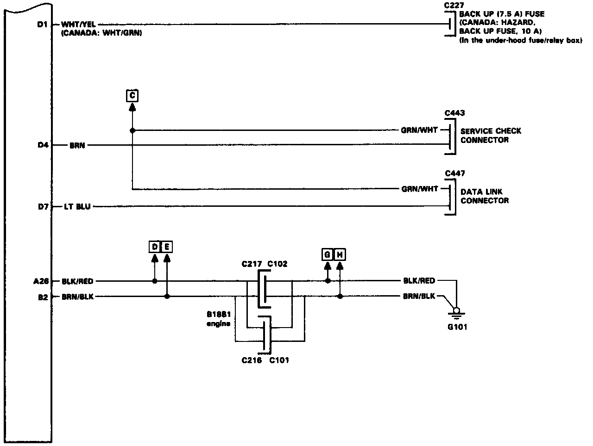

Operation CHARM
: Car repair manuals for everyone.
Home
>>
Acura
>>
1992
>>
Integra L4-1678cc 1.7L DOHC (VTEC) FI
>>
Repair and Diagnosis
>>
Powertrain Management
>>
Computers and Control Systems
>>
Engine Control Module
>>
Diagrams
>>
Electrical Diagrams
>>
Control Unit Connector Wiring Schematics
Control Unit Connector Wiring Schematics




